Tiny
seven-armed coral star
Aquilonastra anomala
Family Asterinidae
updated
Jul 2020
Where
seen? This
tiny sea star is sometimes seen on our Southern shores on rubbly areas near living reefs.
Features: Diameter about 2cm. Usually 7 arms, short, often unequal in length. Upperside mottled colours. Underside white without any markings. |
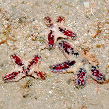
Terumbu Hantu, Jun 13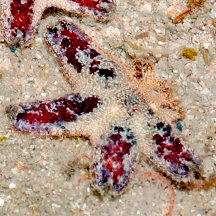
Photo
shared by Loh Kok Sheng on flickr. |
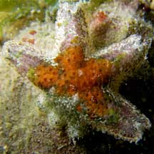
Cyrene Reef, Jun 10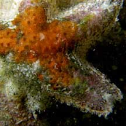
Photo
shared by Toh Chay Hoon on her
blog. |
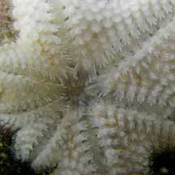
Photo
shared by Toh Chay Hoon on her
blog.
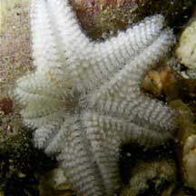
Cyrene Reef, Jun 10 |
| Tiny seven-armed coral stars on Singapore shores |
| Other sightings on Singapore shores |
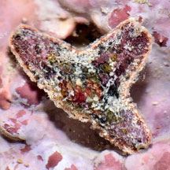 St John's Island, Jan 20
Photo shared by Loh Kok Sheng on facebook.. |
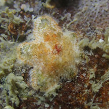 Pulau Tekukor, Mar 24
Photo shared by Jianlin Liu on facebook. |
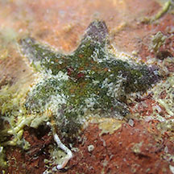 Pulau Tekukor, Mar 24
Photo shared by Jianlin Liu on facebook. |
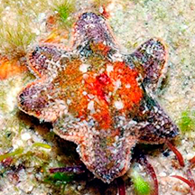
Sisters Island, Feb 13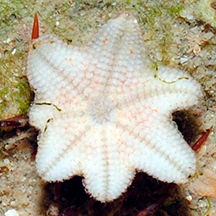
Photo
shared by Loh Kok Sheng on his blog. |
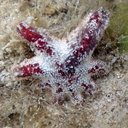
Pulau Hantu, Jul 20
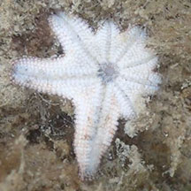
Photo
shared by Dyana Cheah on facebook. |
|
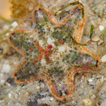
Pulau Jong, Apr 11
Photo
shared by Toh Chay Hoon on her
blog. |
|
|
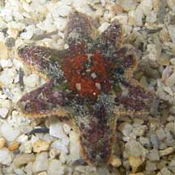
Pulau Jong, May 10
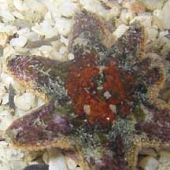
Photo
shared by Toh Chay Hoon on her
blog. |
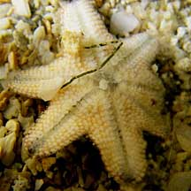
Underside.
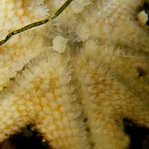
|
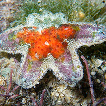
Pulau Jong, May 10
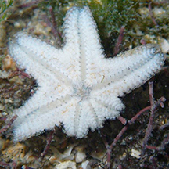
Photo
shared by Loh Kok Sheng on flickr. |
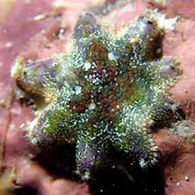 Terumbu Semakau, Apr 21
Photo shared by Jianlin Liu on facebook.. |
|
|
Links
References
- Loisette M. Marsh and Jane Fromont. Field Guide to Shallow Water Seastars of Australia. 2020. Western Australian Museum. 543pp.
- Didier VandenSpiegel
et al. 1998. The
Asteroid fauna (Echinodermata) of Singapore with a distribution
table and illustrated identification to the species. The Raffles
Bulletin of Zoology 1998 46(2): 431-470.
|
|
|